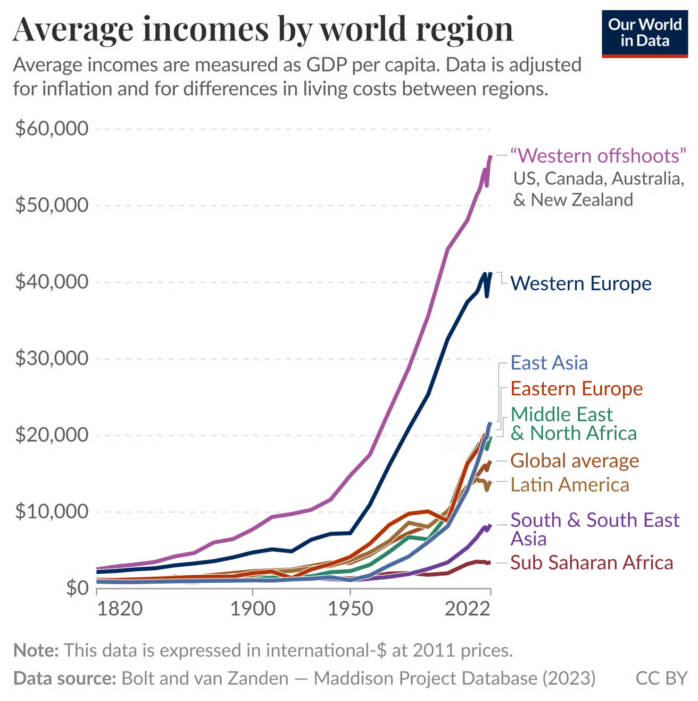
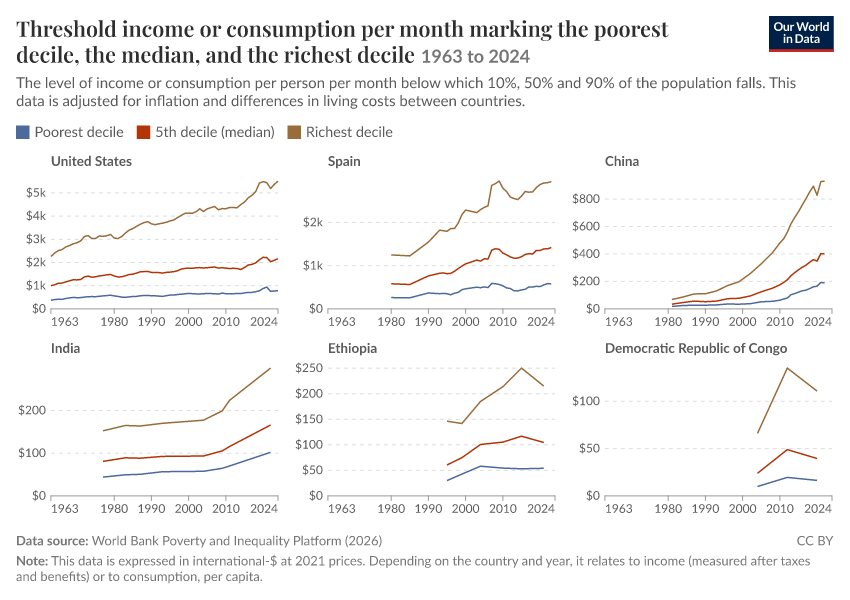
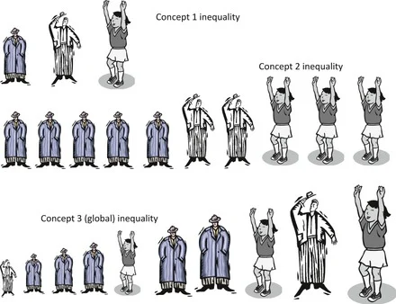
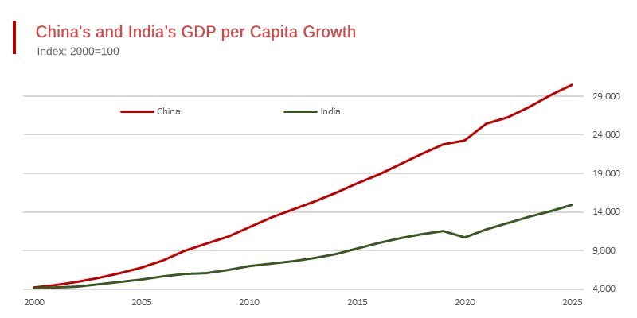

global growth · global inequality · immigration
The Effect of the Global Trade Regime
part one
Growth
part one · growth
THE WORLD IS GROWING
growth · the 90s–10s
The 90s–10s


growth · over time
Growth has increased over time
growth · convergence
Convergence is uncommon
growth · development
Economic development goes hand-in-hand with diversification
growth · industries
Not all industries are equally valuable
part two
Inequality
part two · inequality
THE WORLD IS UNEQUAL
inequality · three types
Three Types of Inequality
inequality 1
International Inequality
inequality 2
Population Inequality
inequality 3
Global Inequality


the implication
Which type of inequality we look at matters
inequality · winners
Who Won Globalization?
inequality · the rest
Who Lost Did Not Win Globalization?
inequality · the global elite
Who are the Global Elite — top 1%?
inequality · asia
Consider Asia

inequality · losers
Losers in that period:
inequality · examples
Examples:
inequality · sources
Sources of Inequality:
inequality · modern wealth
Modern Wealth:
part three
Immigration
immigration · what you study
Immigration Policy: Depends on what you study
immigration · the trade tradeoff
The Trade Tradeoff
immigration · trade posture
Trade posture is not exogenous
immigration · causes
Complicated Causes
immigration · hamilton
ALEXANDER HAMILTON
immigration · hamiltonian economics
Hamiltonian Economics
immigration · the arc
History of Immigration
immigration · nineteenth century
Nineteenth Century
immigration · interwar
War & Interwar Period: Great Aberration
immigration · postwar
Postwar Era
immigration · late postwar
Late Postwar Era
research
Across all eras, there is a statistically significant inverse relationship between trade and immigration.
“Either poor countries will become richer, or poor people will move to rich countries.”
Branko Milanovic